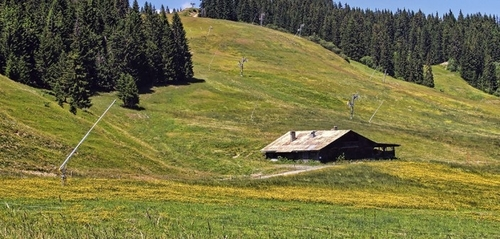
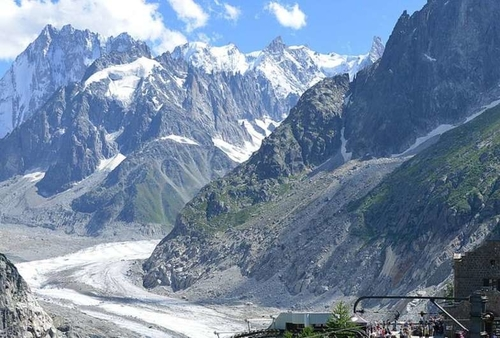
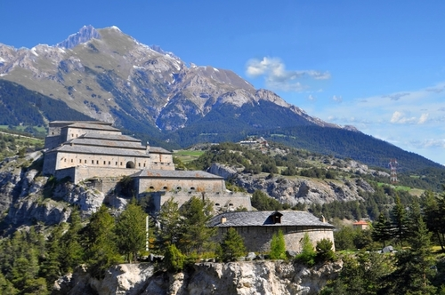
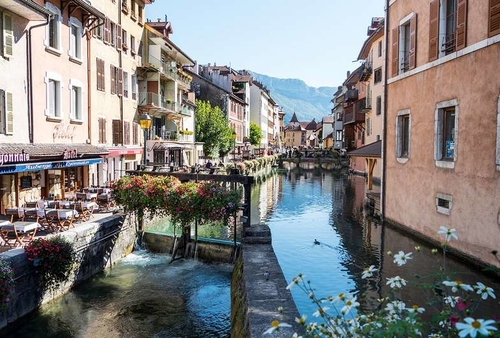
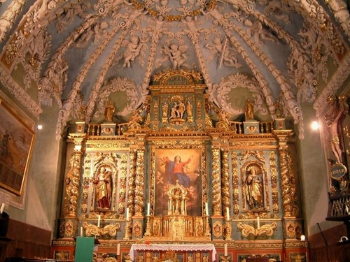
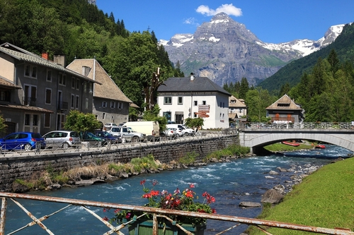
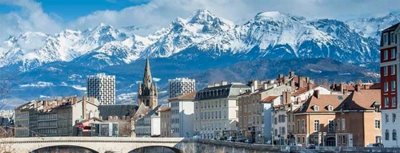
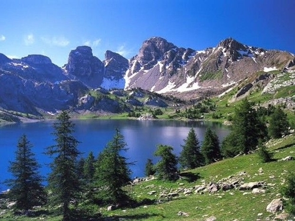
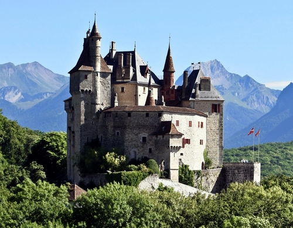
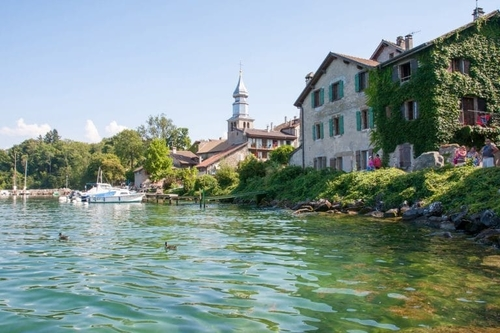

Voici les dix lieux à ne pas manquer lors de votre en haute savoie
L'abbaye d'hautecombe
Mer de glace
Les forts de l'esseillon
Annecy
Notre dame de Valloire
Le cirque du fer à cheval
Chambéry
Le parc national de la vanoise
Le château de Menthon-saint-Bernard
Yvoire
